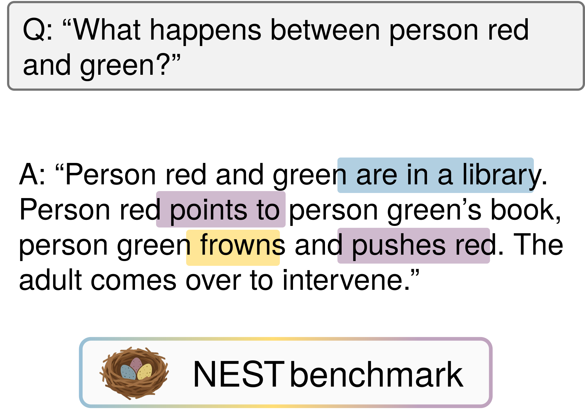

Before Words, Beyond Speech:
Evaluating Nonverbal Social Reasoning in Early Childhood
Lauren Klein, Nick Haber, Philip Fisher, Serena Yeung-Levy

Abstract
Children's earliest years are a period of intense social learning, during which meaning is built through gaze, gesture, and physical contact. Yet, this critical aspect of social interaction remains under-evaluated in multimodal video understanding, as existing benchmarks prioritize the conversation-driven interactions of adults. We address this gap with NEST (Naturalistic Early-childhood Social inTeractions), the first child-centric benchmark for nonverbal social reasoning. NEST comprises 1,208 manually annotated clips (~12s) curated for diversity across naturalistic settings, cultural contexts, and developmental stages. Beyond a lack of data, targeted model improvement in this domain is hindered by coarse evaluation schemas that conflate basic perception with higher-order reasoning. To resolve this, NEST introduces a compositional schema that builds atomic interaction cues into progressive levels of social reasoning: contextual, behavioral, interpersonal, and open-ended descriptions. Extensive analysis of state-of-the-art Vision-Language Models (VLMs) reveals a stark performance collapse: despite strong contextual recognition, models exhibit substantial gaps in decoding precise behavioral and interpersonal cues. We trace these failures to specific biases, including poor consequence grounding and temporal sensitivity. Finally, we ground NEST in real-world applications by evaluating VLMs using domain adaptation strategies. Ultimately, NEST provides a rigorous testbed for advancing socially grounded artificial intelligence in early childhood.
How to structure nonverbal social interactions?
We propose to decompose each interaction into a hierarchy of progressive levels of social reasoning: contextual, behavioral, interpersonal, and an open-ended description that integrates all of these cues. NEST's dense annotation (12.5 questions per clip) allows evaluation similarly to how child development codes interactions, by disaggregating complex concepts instead of relying on a global accuracy score.
The NEST schema
Explore the benchmark
Pick a clip and see how its questions build up the four levels of reasoning.
Why create a benchmark?
Existing video benchmarks miss the nonverbal, child-centric social cues that matter most in early development. [ filler motivation — replace with the gap NEST fills. ]
figures/ ]
| Benchmark | Video | Child-centric | Nonverbal | Hierarchical QA |
|---|---|---|---|---|
| Prior dataset A | ✓ | ✗ | ✗ | ✗ |
| Prior dataset B | ✓ | ✗ | ✓ | ✗ |
| NEST (ours) | ✓ | ✓ | ✓ | ✓ |
Benchmark results highlights
Accuracy drops sharply as reasoning moves up the hierarchy. [ filler — replace with the headline result. ]
Strong contextual recognition, sharp collapse on behavioral & interpersonal cues. [ filler. ]
Models under-predict child–child interactions and miss brief temporal cues. [ filler. ]
Poor consequence grounding persists in real coaching workflows. [ filler. ]
Show full results table
| Model | Contextual | Behavioral | Interpersonal | Open | Average |
|---|---|---|---|---|---|
| Model A | 00.0 | 00.0 | 00.0 | 00.0 | 00.0 |
| Model B | 00.0 | 00.0 | 00.0 | 00.0 | 00.0 |
| Human | 00.0 | 00.0 | 00.0 | 00.0 | 00.0 |
Data & license
NEST contains naturalistic footage of young children. The dataset is released for non-commercial research use only; full access instructions and the data-use agreement are in the GitHub repository. [ filler — state the license (e.g. CC BY-NC 4.0). ]
💻 Access instructions on GitHubBibTeX
@inproceedings{huynh2026nest,
title = {Before Words, Beyond Speech: Evaluating Nonverbal Social Reasoning in Early Childhood},
author = {Huynh, Marie Amale and Bravo-S\'anchez, Laura and Klein, Lauren and
Haber, Nick and Fisher, Philip and Yeung-Levy, Serena},
booktitle = {Advances in Neural Information Processing Systems (NeurIPS) Datasets and Benchmarks},
year = {2026},
}